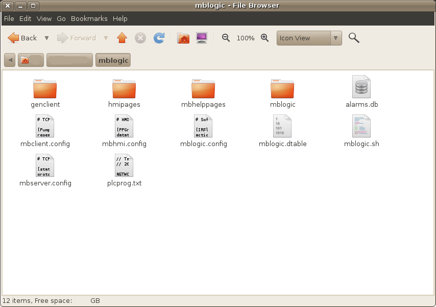
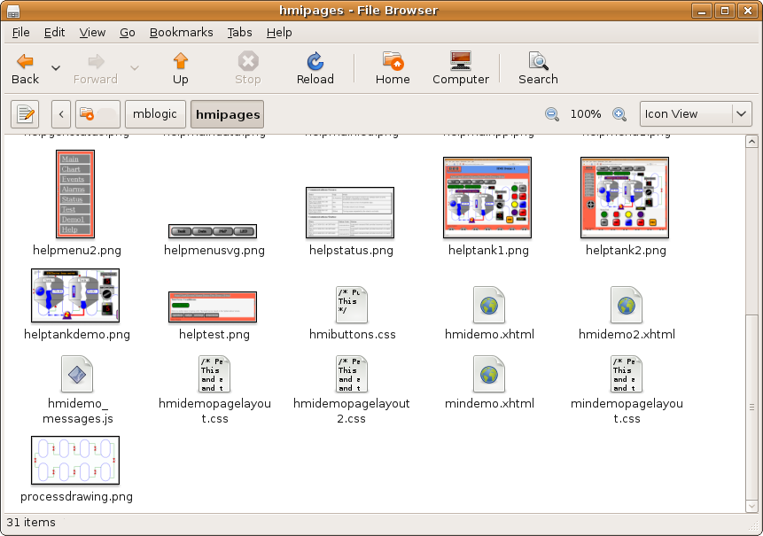

MBLogic
for an open world in automation
MBLogic
for an open world in automation
Help - File Locations
Overview:
This help topic describes the names and locations of important system files.
System Files Location:
The system program files are located in a subdirectory called "mblogic". The system expects this sub-directory to be located in (branching off from) the "current directory" (the directory from which the application was started). If the directory is not located in the expected place, the web servers which provide the on-line help and status information will not be able to find the directories where the web pages are stored.
When you are starting the program, make sure that you are in the correct directory before starting the program. If you start it using the provided shell script or batch file, this should not be a problem. If you are creating your own start up method, be sure to change into the correct directory before starting the program.
Configuration Files and Soft Logic Program:
The system expects to find the configuration files and the soft logic program in the "current directory".
Application File Locations:

These files are:
- mbserver.config - This configures the server communications connections, including the on-line help server and the status system server. The system will not function without a correct configuration.
- mbclient.config - This configures the client communications connections.
- mbhmi.config - This configures the server functions for the HMI. The HMI system will not function without a correct configuration. The communications port number used by the HMI server however, is set in "mbserver.config".
- mblogic.config - This configures the exchange of data between the soft logic system and the other components in the system. The soft logic system will not function without a correct configuration.
- Soft logic program - The name of the file used for the soft logic program is user configurable via the mblogic.config file. There is no default name for this file. The system ships with a sample program called "plcprog.txt". However, any file name and any file extension can be used, provided it does not conflict with the name used by one of the other expected files. For example, "MACH021.plcpgr" is a valid name.
- mblogic.dtable - This is a system file which is used to store data table values. This permits data table values to be restored after a system restart. Details on this feature may be found in the help section on "Soft Logic". This file is automatically created on start up and the size of the file depends on the soft logic configuration.
- alarms.db - This is a system file which stores the database with alarm history and events. This file will be automatically created on start up if it is not already present. The file will grow in size as more alarm history and events are added. The amount of space required to store a record will depend on the length (number of characters) of the alarm and event tags configured, as well as the client id (the name of the client is stored as part of the alarm acknowledgement). However, typically 100,000 alarms history records and 100,000 events will occupy 10 MB of disk space.
Backup Files:
When configuration files are edited via the configuration forms, the old versions are saved with a ".back" extension. For example, "mbhmi.config" will be saved as "mbhmi.config.back".
HMI Files:
The system expects to find the HMI client files in a directory called hmipages branching off from the "current directory". The HMI client web page can have any name. The HMI web server will fetched any page in that directory requested by the user. This includes any Javascript, CSS, PNG, and other files which are named in the web page.
HMI File Locations:

Since the HMI web server will serve any web pages, user generated web pages for purposes other than HMI can also be placed in this directory. For example, equipment manuals and operator instructions can also be served from this directory. However, a dedicated web server for user documentation is also provided (see below).
The standard Javascript library files are located in the application directory in a subdirectory called "hmilib". The HMI system will automatically search for them there.
Any subdirectories which are created in the hmipages directory will be ignored, and any files located in any such subdirectories will not be able to be served by the integrated HMI web server.
RSS Files:
If you use the RSS monitor feature you will need two files which must be placed in the hmipages directory. These are:
- rsstemplate.xml
- rsseventtexts.js
These files must be in the hmipages directory and have those exact names.
User Help Pages:
The system includes a simple web server that can be used to host user created web pages for purposes such as equipment manuals, operating procedures, etc. The system expects to find these files in a directory called mbhelppages branching off from the "current directory". The web pages themselves can have any name. The help web server will fetched any page in that directory requested by the user. This includes any Javascript, CSS, PNG, and other files which are referenced by the web pages.
Generic Clients:
Generic clients are stored in the genclient directory.